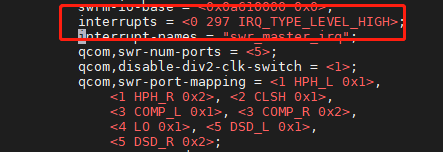

linux中断集合
汇总一下linux中断知识。
参考
虚拟中断号和硬中断号
虚拟中断号
<include/asm-generic/irq.h>
/*
* NR_IRQS is the upper bound of how many interrupts can be handled
* in the platform. It is used to size the static irq_map array,
* so don't make it too big.
*/
#ifndef NR_IRQS
#define NR_IRQS 64
#endif
NR_IRQS：表示系统支持的最大的虚拟中断号数量，它与平台相关
<kernel/irq/internals.h>
#ifdef CONFIG_SPARSE_IRQ
# define IRQ_BITMAP_BITS (NR_IRQS + 8196)
#else
# define IRQ_BITMAP_BITS NR_IRQS
#endif
<kernel/irq/irqdesc.c>
static DECLARE_BITMAP(allocated_irqs, IRQ_BITMAP_BITS);
linux定义了位图来管理这些虚拟中断号,allocated_irqs变量分配IRQ_BITMAP_BITS个bit位，每个bit位代表一个中断
硬中断号
0~31中断号给了SGI和PPI
其它外设中断号从32开始
dts中会用interrupts = <硬中断号n>来指定硬件中断号，其中硬中断号n为板子上的硬件中断号，真正的硬件中断号32+n
如下以Android自带的DTS为例说明：

如上从dts中可看出串口的interrupts值为297，代表它在板级的硬件中断号为297，但是要对应到GIC的硬件中断号需要转换（因为外设硬中断号从32开始）
经转换后的硬件中断后为329，它对应GIC的硬件中断号
A6650:/ # cat /proc/interrupts | grep swr_master_irq
214: 33 10 16 0 mpm-gic 329 Edge swr_master_irq
每一款ARM SOC芯片设计阶段，各种中断和外设的分配情况要固定下来，通过查询芯片手册来确定外设的硬件中断号。
注： dts中的interrupts域主要包含三个属性：
中断类型：GIC_SPI(共享外设中断，用0表示)；GIC_PPI(私有外设中断，用1表示)；
中断ID；
触发类型：IRQ_TYPE_EDGE_RISING:1，IRQ_TYPE_EDGE_FALLING:2，IRQ_TYPE_EDGE_BOTH:3，IRQ_TYPE_LEVEL_HIGH:4，IRQ_TYPE_LEVEL_LOW:8